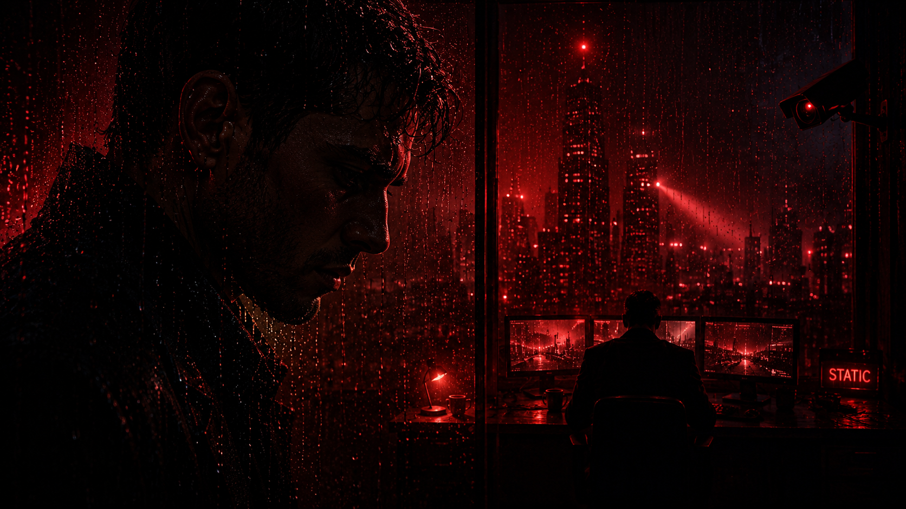
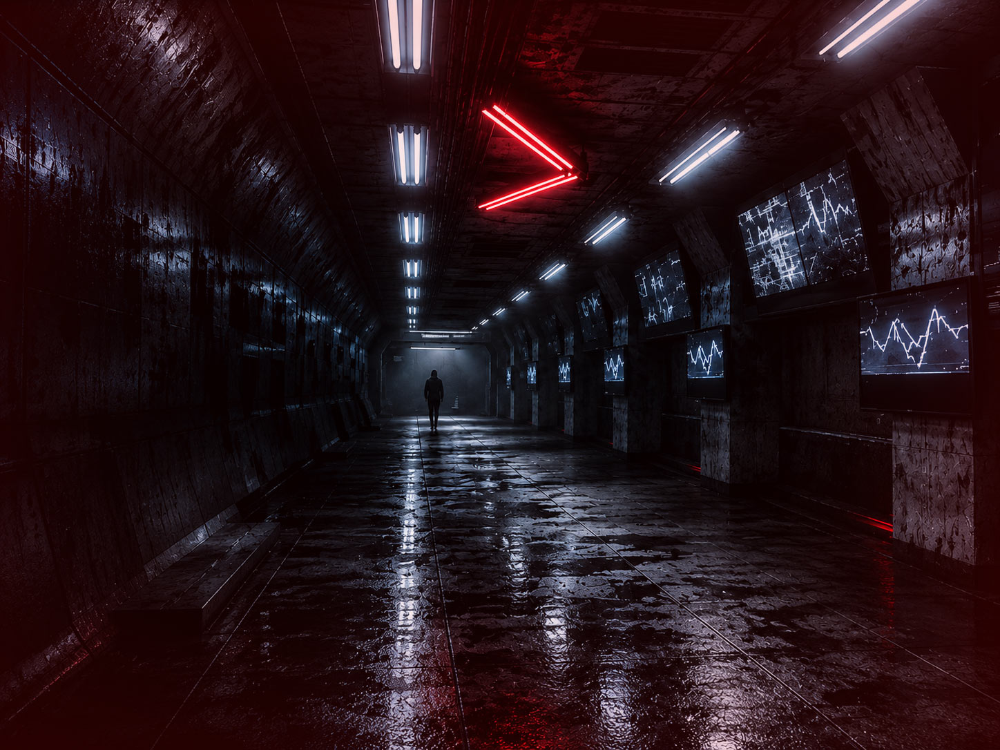
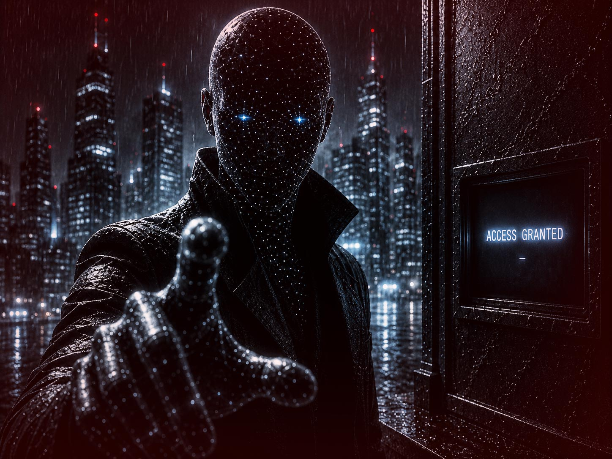

Story Arc 02
STATIC ARC

A signal without mercy.
A system without a face.
A dark cyber-noir synthwave arc about surveillance, control, signal loss and the slow disappearance of meaning.
Transmission status
10 / 10 files available
FILES
10 cinematic transmissions.
Follow the story in chronological order.

01
Static AuthorityControl isn't given.
02
Control Without WarningNo warning. Only control.
03
Dead Signal DistrictWhere signals go dark.
04
Concrete RitualOrder disguised as ritual.
05
No Safe FloorNowhere left to stand.
06
History Repeats ItselfThe pattern never breaks.
07
Signal Present, Meaning RemovedPresent, but meaningless now.
08
No Witness LightNothing left to witness.
09
After Midnight ProtocolThe protocol never sleeps.

10
The Last Access CodeThe last transmission ends.
CAM 07 — SECTOR SA · REC ● · STATUS: ACTIVE · CODEC: H.265 ·
CAM 07 — SECTOR SA · REC ● · STATUS: ACTIVE · CODEC: H.265 ·
CAM 07 — SECTOR SA · REC ● · STATUS: ACTIVE · CODEC: H.265 ·
CAM 07 — SECTOR SA · REC ● · STATUS: ACTIVE · CODEC: H.265 ·
Systems observe. Silence complies. Control · Surveillance · Obedience · Static.